vkki 4위부키&보키 오프카메라 EP.6 — 아파요!(It hurts)
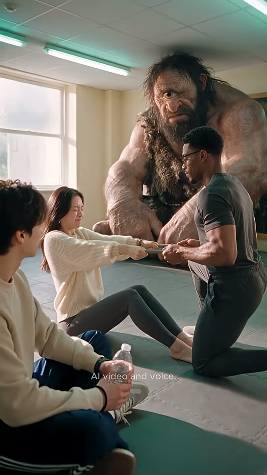
Buki & Voki: OFF CAMERA — EP.6 : It Hurts!
조회수 1,510좋아요 25댓글 1업로드 2026-09-02길이 17.97초608x1080 · 24fps · 9:16 · -16.9 LUFS (LRA 7.2) · AAC 44.1kHz 스테레오
거대 외눈 거인이 지켜보는 재활 스튜디오에서 환자가 'I'm painful(내가 고통을 준다)'이라고 잘못 외치자 트레이너가 밴드를 놓지 않고 'It hurts'를 두 번 복창시킨 뒤 테이핑으로 마무리하는 18초 영어표현 미니드라마.
🔥 떡상 이유
- 부조화 훅(Incongruity hook): 평범한 재활 장면 뒤에 거대 외눈 원시인이 태연히 앉아 있음 → 0~2초 안에 '뭐야?' 정지
- 한국인 직역 오류 저격('아파요'→'I'm painful'): 시청자가 실제로 하는 실수라 자기 얘기처럼 느껴짐(공감+긴장)
- 말장난 리액션(Pun + physical comedy): 'Painful? You're hurting me'와 가슴에 손 얹는 상처받은 척 → 틀린 의미를 웃음으로 설명
- 밴드를 놓지 않는 규칙(Stakes): 정답을 말해야 고통이 끝나는 구조 → 시청자도 속으로 정답을 외치게 됨
- A-B 핑퐁 2회 반복(Spaced repetition): 'The shoulder is painful → Say it hurts → It hurts!'를 2번 → 짧은 영상 안에 학습 각인
- 첫 대사 복선 회수(Callback): 트레이너 첫 대사 'Tell me when it hurts'가 마지막 'Now I know where it hurts'로 돌아옴
- in-world 브랜딩: 트레이너 티셔츠 'vkki' 로고 → 채널 IP 노출
hook0~2.0초 무대사 와이드: 밴드 줄다리기 + 거대 외눈 거인 부조화 → 2.9초 'Tell me when it hurts'(정답 복선)
conflict환자 'Stop — I'm painful!' + 손 인서트로 밴드가 안 풀림 → 트레이너 'Painful? You're hurting me'(오해 개그)
payoff'The shoulder is painful. Say — it hurts' → 'It hurts!' ×2 → 와이드에서 밴드 풀림 → 키네시오 테이프
loop'Now I know where it hurts.' 대사 끝에서 페이드 없이 하드 엔드 → 0프레임 와이드(거인)로 이어져 재시청, 첫 대사-끝 대사 수미상관
⏱ 편집 리듬
컷 수10평균 컷 길이1.8최단/최장0.96 / 2.79분당 컷33.39해석숨은 컷 없음(scdet 재측정도 cuts.json과 동일 9컷). 와이드(2.0s) → CU 리버스샷 1.0~2.8s 핑퐁 → 와이드(1.5s) → 마무리 2.6s의 '와이드-핑퐁-와이드' 샌드위치 구조. 대사 구간은 트레이너(길게 2.8s)↔환자(짧게 1.0s) 비대칭으로 설명/리액션 대비, 두 번째 사이클(10.9~13.8s)은 첫 사이클보다 짧게 압축(0.96s+1.96s). 모든 전환 하드컷, 환자 CU에는 트레이너 목소리가 L컷으로 깔림.
🎨 스타일 바이블
룩실사 시네마틱 AI 영상(설명란 #seedance25 #higgsfieldai → Seedance 2.5 생성 추정). 밝고 따뜻한 데이라이트 라이프스타일 광고 룩, 필름 그레인 약함, 땀 광택 있는 자연 피부. 거인 VFX도 실사 질감으로 합성된 듯 자연스러움조명좌측 대형 창문의 부드러운 확산 데이라이트(약 5000K)가 키, 천장 형광등이 위에서 약한 녹색 기운의 필, 클로즈업은 크림 벽 배경으로 하이키(평균 휘도 약 100/255). 환자 CU는 창문 역광으로 잔머리 림라이트색#E6DCC6(크림 베이지 벽) · #3D4A4B(트레이너 차콜틸 티셔츠) · #F2E8CF(환자 크림 니트) · #6F8F88(틸그레이 밴드) · #9A4FA3(보라 키네시오 테이프) · #C9A3D6(라일락 vkki 로고) · #5F6F66(매트) · 자막 강조 #FFFF40렌즈와이드: 28~35mm 상당(추정), 중간 심도로 4인+거인 모두 식별. 클로즈업: 85mm 상당 f/1.8~2.0 얕은 심도, 상대 인물 어깨를 전경 흐림 프레임으로 걸친 OTS. 인서트: 100mm 매크로 느낌(추정)세트재활/무브먼트 스튜디오: 크림 베이지 벽, 흰 텍스 천장+형광등 2줄, 좌측 흰 창틀 대형 창, 회녹색 조립식 짐매트. 소품: 틸그레이 고무 저항밴드(양끝 바 핸들), 생수병, 보라색 키네시오 테이프자막 스타일흰색 #FFFFFF 세미볼드 산세리프(Proxima Nova/Gilroy SemiBold 계열 추정 → 대체 Montserrat SemiBold 가로 90%), 1080 기준 약 34px, 가운데 정렬 1줄, 얇은 반투명 검정 외곽선+드롭섀도. 키워드 노랑 #FFFF40(실측 RGB 255,255,64~85): 오답 'painful'/'Painful', 정답 'hurts'. 위치는 화자 턱~쇄골 높이 y≈49~50%로 거의 고정, 마지막 컷만 y≈58%. 애니메이션 없음(1프레임 팝), 문장 단위 교체워터마크'AI video and voice.' 하단 중앙(x 50%, y≈79%), 약 17px, #C8CFD1 약 70% 불투명, 전 구간 고정. 별도로 트레이너 티셔츠 왼가슴에 라일락 'vkki' 자수 로고(작은 꽃/별 장식) = 화면 속 브랜딩
트레이너(물리치료사) — 30세 전후 흑인 남성, 페이드컷 곱슬머리, 짧은 염소수염, 둥근 대모테 안경, 차콜틸 기능성 티셔츠(왼가슴 라일락 vkki 로고), 짙은 회색 조거. 침착하고 장난기 있는 선생님(EP.1 계단지기와 동일 배우 추정)
캐릭터 시트 프롬프트Character sheet, front / three-quarter / profile, photorealistic: the Trainer: an athletic Black man about 30, short curly black hair with a crisp fade, trimmed goatee, round tortoiseshell glasses, fitted charcoal-teal athletic T-shirt with a small lilac embroidered 'vkki' logo with a tiny flower star on the left chest, dark grey joggers, neutral light-grey studio backdrop, soft key light, 9:16
동물 버전 캐릭터Character sheet, front / three-quarter / profile: 냥트레이너 (Trainer): a large black-and-white tuxedo cat standing/kneeling upright like a human, calm amber eyes behind round tortoiseshell glasses, long white whiskers, fitted charcoal-teal athletic T-shirt with a small lilac embroidered 'vkki' logo on the left chest, dark grey joggers, photorealistic anthropomorphic animals with real fur detail and expressive animal faces, same live-action cinematic lighting as a Hollywood film, not cartoon, neutral grey backdrop, 9:16
환자(여성) — 20대 중반 한국 여성, 가운데 가르마 긴 생머리, 금 후프 귀걸이, 얇은 금 체인 목걸이, 오버사이즈 크림 니트, 차콜 레깅스, 맨발. 오답 'I'm painful'을 외치는 학습자(EP.1 누나와 동일 배우 추정)
캐릭터 시트 프롬프트Character sheet, front / three-quarter / profile, photorealistic: the Patient: a Korean woman in her mid-20s, long straight dark-brown hair with center part, gold hoop earrings, thin gold chain necklace, oversized cream chunky rib-knit sweater, charcoal leggings, barefoot, neutral light-grey studio backdrop, soft key light, 9:16
동물 버전 캐릭터Character sheet, front / three-quarter / profile: 햄누나 (Patient): a cream-and-white long-haired hamster girl, tiny gold hoop earrings and thin gold chain, oversized cream chunky rib-knit sweater, charcoal leggings, photorealistic anthropomorphic animals with real fur detail and expressive animal faces, same live-action cinematic lighting as a Hollywood film, not cartoon, neutral grey backdrop, 9:16
부키(Buki, 전경 구경꾼) — 20세 전후 한국 남성, 크림 맨투맨, 네이비 트랙팬츠, 검정 손목밴드, 물병 들고 책상다리로 앉아 구경. 와이드 2컷에만 등장(추정: 채널 주인공 부키)
캐릭터 시트 프롬프트Character sheet, front / three-quarter / profile, photorealistic: Buki: a Korean young man about 20 with messy dark-brown hair, cream crewneck sweatshirt, navy track pants with white stripe, black wristband, grey-green sneakers, sitting cross-legged holding a plastic water bottle, neutral light-grey studio backdrop, 9:16
동물 버전 캐릭터Character sheet, front / three-quarter / profile: 햄찌 (Buki): a small golden-orange Syrian hamster boy sitting cross-legged, cream crewneck sweatshirt, navy track pants, tiny grey-green sneakers, hugging a small water bottle, photorealistic anthropomorphic animals with real fur detail and expressive animal faces, same live-action cinematic lighting as a Hollywood film, not cartoon, neutral grey backdrop, 9:16
보키(Voki, 거대 외눈 원시인) — 사람 3배 크기 외눈 거인, 긴 떡진 머리·덥수룩한 수염, 털가죽 어깨걸이, 매트 위에 웅크려 무심히 지켜봄. 대사 없음 — 존재 자체가 개그(OFF CAMERA = 촬영장 쉬는 시간 콘셉트 추정)
캐릭터 시트 프롬프트Character sheet, front / three-quarter / profile, photorealistic creature design: Voki: a gigantic one-eyed cyclops caveman about three times human height, crouching, weathered tan skin, long matted dark hair and bushy beard, single large central eye, shaggy brown fur pelt over one shoulder, huge knuckles resting on the mat, calm and curious, neutral grey backdrop, human for scale, 9:16
동물 버전 캐릭터Character sheet, front / three-quarter / profile: 보키 (Voki): a gigantic shaggy brown Maine Coon cat about three times taller than everyone, crouching on the mat, one big round eye open in the center of its face (cyclops-like, the fur parted over it), primitive fur-pelt caveman tunic over one shoulder, huge fluffy paws resting on the mat, calm and curious, photorealistic anthropomorphic animals with real fur detail and expressive animal faces, same live-action cinematic lighting as a Hollywood film, not cartoon, a hamster beside it for scale, neutral grey backdrop, 9:16
🔊 오디오
목소리AI 음성: 트레이너=차분하고 따뜻한 바리톤, 미국식 영어, 장난칠 때 살짝 올라가는 억양 / 환자=20대 여성, 'Stop — I'm painful!'은 비명에 가까운 외침(영상 최고 음량 약 -12dBFS), 'It hurts!'는 또렷하고 단호하게BGM밝은 어쿠스틱/로파이 팝(피치카토·마림바·가벼운 퍼커션) 약 100 BPM(추정), 자동자막 첫 줄에 [music] 표기 → 0초부터 BGM 존재. 무음 구간 없음(측정 silences 없음), 대사 아래로 낮게 덕킹효과음0.0~2.0s 고무밴드 늘어나는 끽 소리·형광등 험(추정)
4.9~5.9s 손 인서트 밴드 장력 끽(추정)
13.8~15.3s 밴드 풀리는 탁 소리+안도 숨(추정)
15.3~16.3s 키네시오 테이프 이면지 뜯는 찍 소리(추정)라우드니스-16.9TTS 팁트레이너: 남성 바리톤, 속도 0.95, 'Painful?'은 놀란 척 상승 억양, 'You're hurting me'는 과장된 상처 톤, 'Say — it hurts'는 'hurts'에 강세 / 환자: 여성, 'Stop — I'm painful!'은 숨 섞인 고음 외침(게인 +3dB), 'It hurts!' 두 번째가 첫 번째보다 크고 확신 있게. 환자 CU(S6·S8)의 'Say — it hurts'는 트레이너 음성을 별도 생성해 L컷으로 깔 것
BGM 생성 프롬프트Light playful acoustic pop underscore, 100 BPM, pizzicato strings, soft marimba, plucky ukulele, gentle claps and shaker, warm and friendly sitcom feel, low energy under dialogue, no vocals, loopable 18 seconds
🎬 컷별 완전 분해 (10개)
컷 1 · 훅 — '재활 스튜디오에 거대 외눈 거인?' 부조화 비주얼로 1초 안에 스크롤 정지. &#
0.0s → 2.0s (2.0s)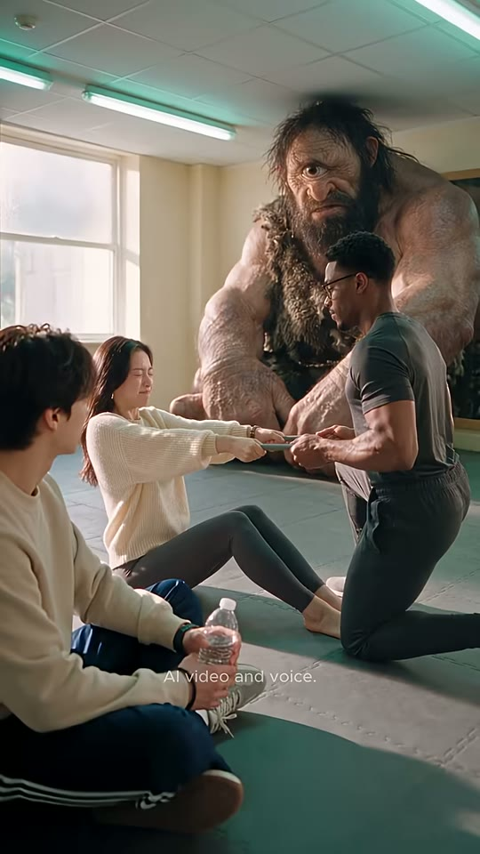

보키(거인)
트레이너
환자(여)
부키(전경)
밴드
샷WS앵글아이레벨(앉은 인물 눈높이, 약간 하이)카메라고정(미세 핸드헬드, 약한 푸시인 추정)구도4인 레이어드 구도: 좌하단 전경에 부키(뒤·옆모습, 물병) 대각선 배치, 중앙에 매트에 앉아 다리 뻗고 밴드를 당기는 환자, 우측 1/3에 한쪽 무릎 꿇고 밴드를 잡은 트레이너, 그 뒤 상단 중앙~우측을 거대 외눈 원시인 보키가 웅크려 채움. 좌상단 창문 역광, 천장 형광등 2줄. 시선: 모두 밴드(화면 중앙)로 모임동작환자가 눈 질끈 감고 밴드를 몸 쪽으로 당기고, 트레이너는 반대편에서 버팀. 부키는 물병 들고 구경, 보키는 무릎에 손 얹고 무심하게 내려다봄. 대사 없음(음악 인트로).대사(대사 없음 — BGM 인트로)화면 자막자막 없음들어오는 전환영상 시작, 0프레임부터 바로(페이드인 없음)효과음/음악BGM 시작(자막에 [music] 표기), 고무밴드 늘어나는 끽 소리·형광등 험(추정)역할훅 — '재활 스튜디오에 거대 외눈 거인?' 부조화 비주얼로 1초 안에 스크롤 정지. 'OFF CAMERA' = 촬영 쉬는 시간 콘셉트(추정)
1순위
veo-3-1다인물+거인 스케일·공간감, 앰비언스 동시 생성
2순위
seedance-2-5원본 모델 — 동일 룩
3순위
kling-v3밴드 당기기 전신 물리 안정
① 이미지 프롬프트 (원본 클론)Wide shot, eye level slightly high, layered depth. Foreground left, seen from behind in three-quarter: Buki: a Korean young man about 20 with messy dark-brown hair, cream crewneck sweatshirt, navy track pants with white stripe, black wristband, grey-green sneakers, sitting cross-legged holding a plastic water bottle. Center: the Patient: a Korean woman in her mid-20s, long straight dark-brown hair with center part, gold hoop earrings, thin gold chain necklace, oversized cream chunky rib-knit sweater, charcoal leggings, barefoot, sitting on the mat with legs extended, eyes squeezed shut, pulling one end of a teal-grey rubber resistance band with two padded bar handles stretched taut between them. Right third: the Trainer: an athletic Black man about 30, short curly black hair with a crisp fade, trimmed goatee, round tortoiseshell glasses, fitted charcoal-teal athletic T-shirt with a small lilac embroidered 'vkki' logo with a tiny flower star on the left chest, dark grey joggers, kneeling on one knee, holding the other handle. Behind them filling the upper center-right: Voki: a gigantic one-eyed cyclops caveman about three times human height, crouching, weathered tan skin, long matted dark hair and bushy beard, single large central eye, shaggy brown fur pelt over one shoulder, huge knuckles resting on the mat, calm and curious, looking down at the band. Everyone's attention converges on the band at frame center. Set: a bright physical-therapy / movement studio: cream-beige walls, white drop ceiling with long fluorescent tube lights giving a faint green cast, a large white-framed window on the left with soft overcast daylight, grey-green interlocking gym mats with stitched seams on the floor. photorealistic cinematic live-action film still, vertical 9:16 (608x1080), soft natural daylight (5000K) mixed with fluorescent top light, warm beige tones, gentle film grain, natural skin texture with slight sweat sheen, shallow depth of field on close-ups, AI-realism in the style of Seedance 2.5.
② 영상 프롬프트 (원본 클론)2.0 seconds, no dialogue. The patient strains, pulling the band toward herself with eyes shut; the trainer kneels and holds steady; the giant cyclops caveman in the background blinks slowly and tilts his head; Buki in the foreground watches holding a water bottle. Static camera with faint handheld drift and a very slow push-in. Ambient: rubber band creak, fluorescent hum, soft upbeat music intro.
③ 동물 버전 이미지 프롬프트Wide shot, eye level slightly high, layered depth. Foreground left: 햄찌 (Buki): a small golden-orange Syrian hamster boy sitting cross-legged, cream crewneck sweatshirt, navy track pants, tiny grey-green sneakers, hugging a small water bottle. Center: 햄누나 (Patient): a cream-and-white long-haired hamster girl, tiny gold hoop earrings and thin gold chain, oversized cream chunky rib-knit sweater, charcoal leggings, sitting with legs out, eyes squeezed shut, pulling one end of a teal-grey rubber resistance band with two padded bar handles stretched taut between them. Right: 냥트레이너 (Trainer): a large black-and-white tuxedo cat standing/kneeling upright like a human, calm amber eyes behind round tortoiseshell glasses, long white whiskers, fitted charcoal-teal athletic T-shirt with a small lilac embroidered 'vkki' logo on the left chest, dark grey joggers, kneeling, holding the other handle. Behind them: 보키 (Voki): a gigantic shaggy brown Maine Coon cat about three times taller than everyone, crouching on the mat, one big round eye open in the center of its face (cyclops-like, the fur parted over it), primitive fur-pelt caveman tunic over one shoulder, huge fluffy paws resting on the mat, calm and curious, looking down at the band. photorealistic anthropomorphic animals with real fur detail and expressive animal faces, same live-action cinematic lighting as a Hollywood film, not cartoon. Set: a bright physical-therapy / movement studio: cream-beige walls, white drop ceiling with long fluorescent tube lights giving a faint green cast, a large white-framed window on the left with soft overcast daylight, grey-green interlocking gym mats with stitched seams on the floor. photorealistic cinematic live-action film still, vertical 9:16 (608x1080), soft natural daylight (5000K) mixed with fluorescent top light, warm beige tones, gentle film grain, natural skin texture with slight sweat sheen, shallow depth of field on close-ups, AI-realism in the style of Seedance 2.5.
④ 동물 버전 영상 프롬프트2.0 seconds, no dialogue. 햄누나 strains pulling the band, whiskers quivering; the tuxedo cat trainer holds steady; the giant one-eyed Maine Coon behind slowly blinks its single eye and tilts its head; 햄찌 watches hugging the water bottle. Static camera, slow push-in.
네거티브cartoon, anime, 3D render look, plastic skin, waxy face, extra fingers, deformed hands, fused fingers, broken band, band passing through hands, warped face, subtitles, text other than the vkki logo, watermark, lowres, heavy motion blur on faces, flicker, frame jitter, horizontal 16:9 framing, letterbox, dark moody lighting, gym machines, mirrors || ANIMAL VERSION add: human faces on animals, human hands, humans, uncanny hybrid, stuffed toy look, chibi, big-head cartoon proportions
컷 2 · 셋업 — 정답 표현 'it hurts'를 트레이너가 먼저 사용(나중에 되돌아오는 복선)
2.0s → 3.92s (1.92s)

트레이너 얼굴
트레이너 상반신
환자 어깨(전경 흐림)
vkki 로고
샷MCU앵글아이레벨, 환자 어깨 너머 OTS(흐린 전경)카메라고정구도트레이너 얼굴 상단 중앙~우측(눈높이 y≈28%), 좌측 가장자리와 좌하단에 환자의 흐린 머리카락·크림 스웨터 어깨(전경 프레임), 하단 우측에 밴드 핸들 쥔 손. 가슴 'vkki' 로고가 화면 우측 중단(y≈60%)동작눈을 감고 차분히 고개 끄덕이다(2.0~2.9s) 눈 뜨고 부드럽게 'Tell me when it hurts.' — 전문가다운 침착한 미소, 손은 밴드를 꽉 쥔 채.대사트레이너: "Tell me when it hurts."화면 자막2.917~3.875 'Tell me when it hurts'(흰, 강조 없음, y≈50%, x≈57%) — 정답 표현을 첫 대사에 미리 심어둠(복선)들어오는 전환하드컷(와이드→OTS 클로즈업, 대사 0.9s 전 선행 컷)효과음/음악BGM 유지, 차분한 남성 음성역할셋업 — 정답 표현 'it hurts'를 트레이너가 먼저 사용(나중에 되돌아오는 복선)
1순위
minimax-h3대사 립싱크+음성 동시 생성, 무료 — 팀 기본
2순위
seedance-2-5원본 제작 모델(설명란 #seedance25) — 안경 반사·피부 톤 룩 동일
3순위
kling-v3-omni레퍼런스 캐릭터 일관성 + 립싱크
① 이미지 프롬프트 (원본 클론)Medium close-up over the patient's blurred shoulder, eye level. the Trainer: an athletic Black man about 30, short curly black hair with a crisp fade, trimmed goatee, round tortoiseshell glasses, fitted charcoal-teal athletic T-shirt with a small lilac embroidered 'vkki' logo with a tiny flower star on the left chest, dark grey joggers, eyes gently closed, calm confident expression, both hands low holding a band handle. Left edge and bottom-left: out-of-focus dark hair and cream knit sweater shoulder of the patient as a foreground frame. background: out-of-focus plain cream-beige wall with soft window light, creamy bokeh Set: a bright physical-therapy / movement studio: cream-beige walls, white drop ceiling with long fluorescent tube lights giving a faint green cast, a large white-framed window on the left with soft overcast daylight, grey-green interlocking gym mats with stitched seams on the floor. photorealistic cinematic live-action film still, vertical 9:16 (608x1080), soft natural daylight (5000K) mixed with fluorescent top light, warm beige tones, gentle film grain, natural skin texture with slight sweat sheen, shallow depth of field on close-ups, AI-realism in the style of Seedance 2.5.
② 영상 프롬프트 (원본 클론)1.9 seconds. The trainer, eyes closed, gives a small calm nod, opens his eyes and speaks gently. Lip-sync, calm warm baritone, American English: "Tell me when it hurts." Static camera, patient's shoulder soft in foreground.
③ 동물 버전 이미지 프롬프트Medium close-up over 햄누나's blurred furry shoulder, eye level. 냥트레이너 (Trainer): a large black-and-white tuxedo cat standing/kneeling upright like a human, calm amber eyes behind round tortoiseshell glasses, long white whiskers, fitted charcoal-teal athletic T-shirt with a small lilac embroidered 'vkki' logo on the left chest, dark grey joggers, eyes gently closed behind the glasses, calm expression, paws low holding the band handle. photorealistic anthropomorphic animals with real fur detail and expressive animal faces, same live-action cinematic lighting as a Hollywood film, not cartoon. background: out-of-focus plain cream-beige wall with soft window light, creamy bokeh Set: a bright physical-therapy / movement studio: cream-beige walls, white drop ceiling with long fluorescent tube lights giving a faint green cast, a large white-framed window on the left with soft overcast daylight, grey-green interlocking gym mats with stitched seams on the floor. photorealistic cinematic live-action film still, vertical 9:16 (608x1080), soft natural daylight (5000K) mixed with fluorescent top light, warm beige tones, gentle film grain, natural skin texture with slight sweat sheen, shallow depth of field on close-ups, AI-realism in the style of Seedance 2.5.
④ 동물 버전 영상 프롬프트1.9 seconds. The tuxedo cat trainer slow-blinks, opens his eyes, speaks gently: "Tell me when it hurts." Whiskers relaxed. Static camera.
네거티브cartoon, anime, 3D render look, plastic skin, waxy face, extra fingers, deformed hands, fused fingers, broken band, band passing through hands, warped face, subtitles, text other than the vkki logo, watermark, lowres, heavy motion blur on faces, flicker, frame jitter, horizontal 16:9 framing, letterbox, dark moody lighting, gym machines, mirrors || ANIMAL VERSION add: human faces on animals, human hands, humans, uncanny hybrid, stuffed toy look, chibi, big-head cartoon proportions
컷 3 · 갈등 — 한국인이 흔히 쓰는 오답 'I'm painful'(=내가 고통을 주는 사
3.92s → 4.92s (1.0s)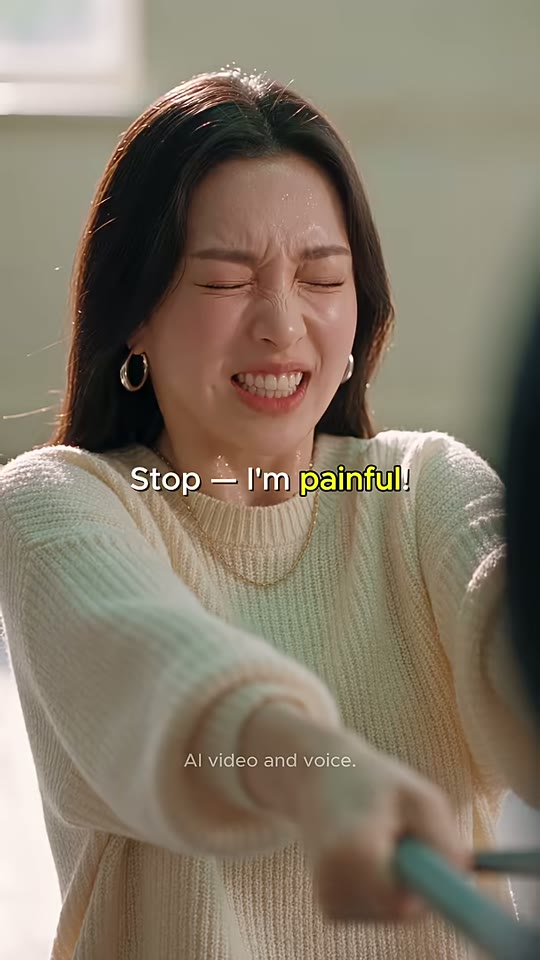
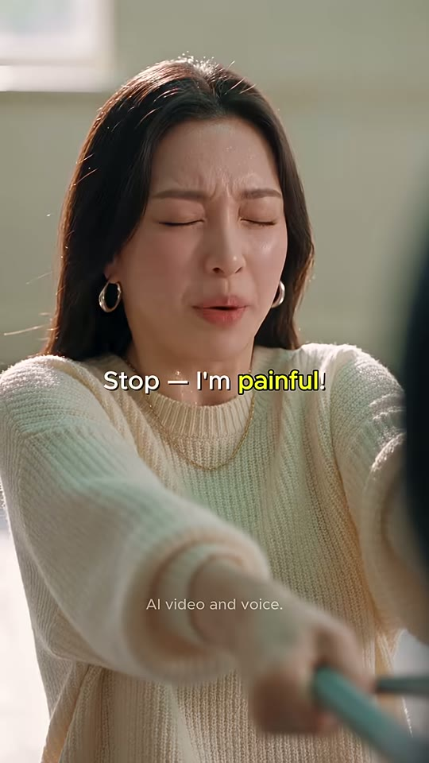

환자 얼굴
뻗은 팔
밴드 핸들(전경)
샷MCU앵글아이레벨 정면(트레이너 시점)카메라고정구도환자 얼굴 상단 중앙(y≈12~46%), 양팔이 카메라 쪽으로 뻗어 하단을 채우고 우하단 전경에 흐린 밴드 핸들. 좌상단 창문 하이라이트, 역광에 잔머리 빛남동작눈을 질끈 감고 이마 찡그리며 입 벌려 고통스럽게 'Stop — I'm painful!' — 밴드를 끝까지 당긴 채 어깨 떨림.대사환자: "Stop. I'm painful."화면 자막4.000~5.958 'Stop — I'm painful!'('painful' 노랑, y≈50%) — 다음 컷(S4 손 인서트)까지 이어짐들어오는 전환하드컷(리버스 샷), 컷 0.08s 뒤 자막효과음/음악음량 최고점(약 -12dBFS, 외침), BGM 유지역할갈등 — 한국인이 흔히 쓰는 오답 'I'm painful'(=내가 고통을 주는 사람) 투척
1순위
seedance-2-5원본과 동일 모델, 눈 질끈·찡그림 같은 통증 미세표정 재현
2순위
minimax-h3짧은 대사 립싱크+오디오 한 번에
3순위
seedance-2-0클로즈업 감정 연기 대안
① 이미지 프롬프트 (원본 클론)Medium close-up, eye level, frontal from the trainer's point of view. the Patient: a Korean woman in her mid-20s, long straight dark-brown hair with center part, gold hoop earrings, thin gold chain necklace, oversized cream chunky rib-knit sweater, charcoal leggings, barefoot, eyes squeezed shut, brows knitted, mouth open in pain, both arms stretched toward the camera gripping a band handle. Bottom right foreground: blurred teal-grey band handle. Backlit flyaway hairs glowing. background: out-of-focus plain cream-beige wall with soft window light, creamy bokeh Set: a bright physical-therapy / movement studio: cream-beige walls, white drop ceiling with long fluorescent tube lights giving a faint green cast, a large white-framed window on the left with soft overcast daylight, grey-green interlocking gym mats with stitched seams on the floor. photorealistic cinematic live-action film still, vertical 9:16 (608x1080), soft natural daylight (5000K) mixed with fluorescent top light, warm beige tones, gentle film grain, natural skin texture with slight sweat sheen, shallow depth of field on close-ups, AI-realism in the style of Seedance 2.5.
② 영상 프롬프트 (원본 클론)1.0 second. The patient winces hard, shoulders trembling as the band stays taut, and cries out. Lip-sync, pained female voice, American English: "Stop— I'm painful!" Static camera.
③ 동물 버전 이미지 프롬프트Medium close-up, eye level, frontal. 햄누나 (Patient): a cream-and-white long-haired hamster girl, tiny gold hoop earrings and thin gold chain, oversized cream chunky rib-knit sweater, charcoal leggings, eyes squeezed shut, whiskers pulled back, tiny mouth open in pain, both paws stretched toward the camera gripping a band handle. photorealistic anthropomorphic animals with real fur detail and expressive animal faces, same live-action cinematic lighting as a Hollywood film, not cartoon. background: out-of-focus plain cream-beige wall with soft window light, creamy bokeh Set: a bright physical-therapy / movement studio: cream-beige walls, white drop ceiling with long fluorescent tube lights giving a faint green cast, a large white-framed window on the left with soft overcast daylight, grey-green interlocking gym mats with stitched seams on the floor. photorealistic cinematic live-action film still, vertical 9:16 (608x1080), soft natural daylight (5000K) mixed with fluorescent top light, warm beige tones, gentle film grain, natural skin texture with slight sweat sheen, shallow depth of field on close-ups, AI-realism in the style of Seedance 2.5.
④ 동물 버전 영상 프롬프트1.0 second. 햄누나 winces, ears flattened, cheeks trembling, cries: "Stop— I'm painful!" Static camera.
네거티브cartoon, anime, 3D render look, plastic skin, waxy face, extra fingers, deformed hands, fused fingers, broken band, band passing through hands, warped face, subtitles, text other than the vkki logo, watermark, lowres, heavy motion blur on faces, flicker, frame jitter, horizontal 16:9 framing, letterbox, dark moody lighting, gym machines, mirrors || ANIMAL VERSION add: human faces on animals, human hands, humans, uncanny hybrid, stuffed toy look, chibi, big-head cartoon proportions
컷 4 · 긴장 유지 — 틀린 말을 하면 풀려나지 못한다는 규칙 시각화
4.92s → 5.96s (1.04s)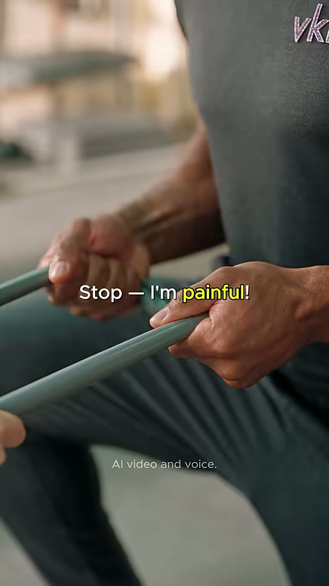


왼손
오른손
밴드
vkki 로고(잘림)
샷CU 인서트앵글측면 아이레벨카메라고정(손 움직임만)구도트레이너의 두 손이 화면 중앙에서 밴드 바 핸들을 움켜쥠(좌손 좌중단, 우손 중앙우측), 밴드가 좌하단 대각선으로 팽팽히 뻗음. 우상단에 잘린 'vkk' 로고, 좌상단 창문 흐림동작트레이너가 밴드를 놓지 않고 오히려 손에 힘을 줘 다시 움켜쥠 — '밴드가 안 놓아준다' 긴장.대사(대사 없음 — 이전 외침이 이어지는 구간)화면 자막'Stop — I'm painful!' 자막 이월(4.917~5.958, 'painful' 노랑)들어오는 전환하드컷 + 자막 L컷(대사 자막이 인서트 위에 유지)효과음/음악밴드 끽 늘어나는 소리(추정)역할긴장 유지 — 틀린 말을 하면 풀려나지 못한다는 규칙 시각화
1순위
kling-v3손 클로즈업·고무밴드 장력 물리 표현 안정
2순위
seedance-2-5원본 모델 룩 일치
3순위
wan-v3-0짧은 인서트 대안, 비용 절감
① 이미지 프롬프트 (원본 클론)Close-up insert, side eye level. The trainer's strong hands gripping the padded bar handles of a teal-grey rubber resistance band with two padded bar handles stretched taut between them, knuckles tense, forearm veins, charcoal-teal T-shirt with the lilac 'vkki' logo cropped at the top right. Background: blurred window light and beige wall. Set: a bright physical-therapy / movement studio: cream-beige walls, white drop ceiling with long fluorescent tube lights giving a faint green cast, a large white-framed window on the left with soft overcast daylight, grey-green interlocking gym mats with stitched seams on the floor. photorealistic cinematic live-action film still, vertical 9:16 (608x1080), soft natural daylight (5000K) mixed with fluorescent top light, warm beige tones, gentle film grain, natural skin texture with slight sweat sheen, shallow depth of field on close-ups, AI-realism in the style of Seedance 2.5.
② 영상 프롬프트 (원본 클론)1.0 second. Close-up insert: the trainer's hands tighten their grip on the band handles, the band stretches a little more and trembles with tension. No dialogue. Static camera, shallow depth of field.
③ 동물 버전 이미지 프롬프트Close-up insert, side eye level. The tuxedo cat trainer's white-socked paws gripping the padded bar handles of a teal-grey rubber resistance band with two padded bar handles stretched taut between them, charcoal-teal T-shirt with the lilac 'vkki' logo cropped at the top right. photorealistic anthropomorphic animals with real fur detail and expressive animal faces, same live-action cinematic lighting as a Hollywood film, not cartoon. Background: blurred window light. Set: a bright physical-therapy / movement studio: cream-beige walls, white drop ceiling with long fluorescent tube lights giving a faint green cast, a large white-framed window on the left with soft overcast daylight, grey-green interlocking gym mats with stitched seams on the floor. photorealistic cinematic live-action film still, vertical 9:16 (608x1080), soft natural daylight (5000K) mixed with fluorescent top light, warm beige tones, gentle film grain, natural skin texture with slight sweat sheen, shallow depth of field on close-ups, AI-realism in the style of Seedance 2.5.
④ 동물 버전 영상 프롬프트1.0 second. The cat's paws tighten on the band handles, claws slightly out for grip, band trembling. No dialogue. Static camera.
네거티브cartoon, anime, 3D render look, plastic skin, waxy face, extra fingers, deformed hands, fused fingers, broken band, band passing through hands, warped face, subtitles, text other than the vkki logo, watermark, lowres, heavy motion blur on faces, flicker, frame jitter, horizontal 16:9 framing, letterbox, dark moody lighting, gym machines, mirrors || ANIMAL VERSION add: human faces on animals, human hands, humans, uncanny hybrid, stuffed toy look, chibi, big-head cartoon proportions
컷 5 · 오답 해설 — 'I'm painful' = '내가 아프게 한다'
5.96s → 8.75s (2.79s)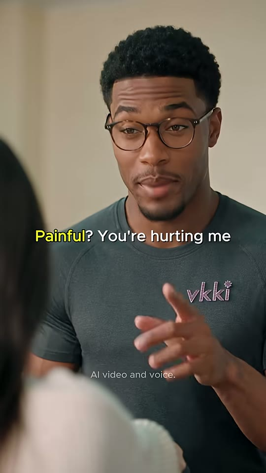


트레이너 얼굴
가슴 위 손
환자(전경 흐림)
샷MCU앵글아이레벨, OTS(환자 흐린 전경)카메라고정구도S2와 동일 셋업: 트레이너 얼굴 상단 중앙, 좌측 가장자리 환자 머리·어깨 흐림. 6.5~7.3s 오른손을 펴서 가슴 중앙(로고 위)에 얹음동작눈썹 올리며 'Painful?' 되묻고, 손을 펴 가슴에 얹으며 '내가 아프게 한다고?' 장난스러운 상처받은 척(6.0~7.4s) → 손 내리고 차분하게 'The shoulder is painful'(7.8~8.7s) 교정.대사트레이너: "Painful? You're hurting me. The shoulder is painful."화면 자막5.958~7.500 'Painful? You're hurting me'('Painful' 노랑) → 7.500~7.792 공백 → 7.792~8.750 'The shoulder is painful'('painful' 노랑, x≈55%)들어오는 전환하드컷(리버스 샷)효과음/음악BGM 유지, 코믹 뉘앙스 목소리역할오답 해설 — 'I'm painful' = '내가 아프게 한다'를 말장난+가슴 잡는 제스처로 보여주고, 올바른 주어(The shoulder is painful) 제시
1순위
minimax-h3대사 립싱크+음성 동시 생성, 무료 — 팀 기본
2순위
seedance-2-5원본 제작 모델(설명란 #seedance25) — 안경 반사·피부 톤 룩 동일
3순위
kling-v3-omni레퍼런스 캐릭터 일관성 + 립싱크
① 이미지 프롬프트 (원본 클론)Medium close-up over the patient's blurred shoulder, eye level. the Trainer: an athletic Black man about 30, short curly black hair with a crisp fade, trimmed goatee, round tortoiseshell glasses, fitted charcoal-teal athletic T-shirt with a small lilac embroidered 'vkki' logo with a tiny flower star on the left chest, dark grey joggers, eyebrows raised in playful mock offense, right hand spread flat on the center of his chest. Left edge: blurred dark hair and cream sweater of the patient. background: out-of-focus plain cream-beige wall with soft window light, creamy bokeh Set: a bright physical-therapy / movement studio: cream-beige walls, white drop ceiling with long fluorescent tube lights giving a faint green cast, a large white-framed window on the left with soft overcast daylight, grey-green interlocking gym mats with stitched seams on the floor. photorealistic cinematic live-action film still, vertical 9:16 (608x1080), soft natural daylight (5000K) mixed with fluorescent top light, warm beige tones, gentle film grain, natural skin texture with slight sweat sheen, shallow depth of field on close-ups, AI-realism in the style of Seedance 2.5.
② 영상 프롬프트 (원본 클론)2.8 seconds. The trainer raises his eyebrows, places his open right hand on his chest in mock hurt, then lowers the hand and explains calmly. Lip-sync, warm baritone: "Painful? You're hurting me." (short pause) "The shoulder is painful." Static camera.
③ 동물 버전 이미지 프롬프트Medium close-up over 햄누나's blurred shoulder, eye level. 냥트레이너 (Trainer): a large black-and-white tuxedo cat standing/kneeling upright like a human, calm amber eyes behind round tortoiseshell glasses, long white whiskers, fitted charcoal-teal athletic T-shirt with a small lilac embroidered 'vkki' logo on the left chest, dark grey joggers, eyebrows (whisker pads) raised in mock offense, one paw pressed flat on the chest. photorealistic anthropomorphic animals with real fur detail and expressive animal faces, same live-action cinematic lighting as a Hollywood film, not cartoon. background: out-of-focus plain cream-beige wall with soft window light, creamy bokeh Set: a bright physical-therapy / movement studio: cream-beige walls, white drop ceiling with long fluorescent tube lights giving a faint green cast, a large white-framed window on the left with soft overcast daylight, grey-green interlocking gym mats with stitched seams on the floor. photorealistic cinematic live-action film still, vertical 9:16 (608x1080), soft natural daylight (5000K) mixed with fluorescent top light, warm beige tones, gentle film grain, natural skin texture with slight sweat sheen, shallow depth of field on close-ups, AI-realism in the style of Seedance 2.5.
④ 동물 버전 영상 프롬프트2.8 seconds. The tuxedo cat presses a paw to its chest dramatically, ears back in mock hurt, then calmly explains: "Painful? You're hurting me." ... "The shoulder is painful." Static camera.
네거티브cartoon, anime, 3D render look, plastic skin, waxy face, extra fingers, deformed hands, fused fingers, broken band, band passing through hands, warped face, subtitles, text other than the vkki logo, watermark, lowres, heavy motion blur on faces, flicker, frame jitter, horizontal 16:9 framing, letterbox, dark moody lighting, gym machines, mirrors || ANIMAL VERSION add: human faces on animals, human hands, humans, uncanny hybrid, stuffed toy look, chibi, big-head cartoon proportions
컷 6 · 정답 제시+복창 1회차
8.75s → 10.88s (2.13s)
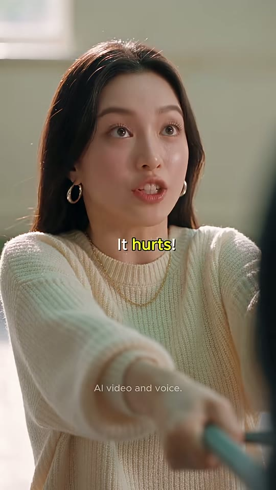
환자 얼굴
뻗은 팔
샷MCU앵글아이레벨 정면카메라고정구도S3와 동일 셋업: 환자 얼굴 상단 중앙, 뻗은 팔 하단, 우하단 밴드 핸들동작처음엔 눈 질끈 감고 참다가(트레이너 VO 'Say — it hurts' 동안) → 눈을 번쩍 뜨고 또렷하게 'It hurts!' 외침.대사트레이너(VO): "Say, 'It hurts.'" / 환자: "It hurts."화면 자막8.750~10.292 'Say — it hurts'('hurts' 노랑) → 10.333~10.875 'It hurts!'('hurts!' 노랑, x≈53%)들어오는 전환하드컷 + 오디오 L컷(트레이너 대사가 환자 얼굴 위로 넘어옴)효과음/음악BGM 유지역할정답 제시+복창 1회차
1순위
seedance-2-5원본과 동일 모델, 눈 질끈·찡그림 같은 통증 미세표정 재현
2순위
minimax-h3짧은 대사 립싱크+오디오 한 번에
3순위
seedance-2-0클로즈업 감정 연기 대안
① 이미지 프롬프트 (원본 클론)Medium close-up, eye level, frontal. the Patient: a Korean woman in her mid-20s, long straight dark-brown hair with center part, gold hoop earrings, thin gold chain necklace, oversized cream chunky rib-knit sweater, charcoal leggings, barefoot, eyes squeezed shut, enduring pain, arms stretched forward holding the band. background: out-of-focus plain cream-beige wall with soft window light, creamy bokeh Set: a bright physical-therapy / movement studio: cream-beige walls, white drop ceiling with long fluorescent tube lights giving a faint green cast, a large white-framed window on the left with soft overcast daylight, grey-green interlocking gym mats with stitched seams on the floor. photorealistic cinematic live-action film still, vertical 9:16 (608x1080), soft natural daylight (5000K) mixed with fluorescent top light, warm beige tones, gentle film grain, natural skin texture with slight sweat sheen, shallow depth of field on close-ups, AI-realism in the style of Seedance 2.5.
② 영상 프롬프트 (원본 클론)2.1 seconds. Over the trainer's off-screen voice ("Say— 'It hurts.'"), the patient endures with eyes shut, then snaps her eyes open and says clearly. Lip-sync only on her line, female voice: "It hurts!" Static camera.
③ 동물 버전 이미지 프롬프트Medium close-up, eye level, frontal. 햄누나 (Patient): a cream-and-white long-haired hamster girl, tiny gold hoop earrings and thin gold chain, oversized cream chunky rib-knit sweater, charcoal leggings, eyes squeezed shut, enduring, paws forward on the band. photorealistic anthropomorphic animals with real fur detail and expressive animal faces, same live-action cinematic lighting as a Hollywood film, not cartoon. background: out-of-focus plain cream-beige wall with soft window light, creamy bokeh Set: a bright physical-therapy / movement studio: cream-beige walls, white drop ceiling with long fluorescent tube lights giving a faint green cast, a large white-framed window on the left with soft overcast daylight, grey-green interlocking gym mats with stitched seams on the floor. photorealistic cinematic live-action film still, vertical 9:16 (608x1080), soft natural daylight (5000K) mixed with fluorescent top light, warm beige tones, gentle film grain, natural skin texture with slight sweat sheen, shallow depth of field on close-ups, AI-realism in the style of Seedance 2.5.
④ 동물 버전 영상 프롬프트2.1 seconds. Over the cat trainer's off-screen voice ("Say— 'It hurts.'"), 햄누나 endures, then pops her eyes open: "It hurts!" Static camera.
네거티브cartoon, anime, 3D render look, plastic skin, waxy face, extra fingers, deformed hands, fused fingers, broken band, band passing through hands, warped face, subtitles, text other than the vkki logo, watermark, lowres, heavy motion blur on faces, flicker, frame jitter, horizontal 16:9 framing, letterbox, dark moody lighting, gym machines, mirrors || ANIMAL VERSION add: human faces on animals, human hands, humans, uncanny hybrid, stuffed toy look, chibi, big-head cartoon proportions
컷 7 · 반복 학습 2회차 시작(A-B 핑퐁 재생)
10.88s → 11.83s (0.96s)
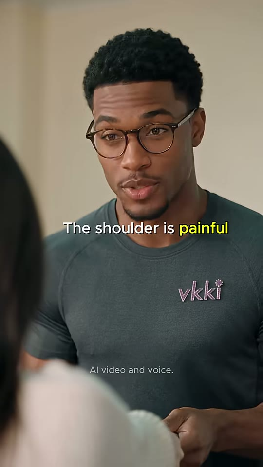

트레이너 얼굴
vkki 로고
환자(전경 흐림)
샷MCU앵글아이레벨, OTS카메라고정구도S5와 동일 셋업, 트레이너 얼굴 상단 중앙, 로고 우측 중단, 좌측 환자 흐림동작차분하게 다시 한 번 'The shoulder is painful' 반복(교정 반복).대사트레이너: "The shoulder is painful."화면 자막10.875~11.833 'The shoulder is painful'('painful' 노랑)들어오는 전환하드컷효과음/음악BGM 유지역할반복 학습 2회차 시작(A-B 핑퐁 재생)
1순위
minimax-h3대사 립싱크+음성 동시 생성, 무료 — 팀 기본
2순위
seedance-2-5원본 제작 모델(설명란 #seedance25) — 안경 반사·피부 톤 룩 동일
3순위
kling-v3-omni레퍼런스 캐릭터 일관성 + 립싱크
① 이미지 프롬프트 (원본 클론)Medium close-up over the patient's blurred shoulder, eye level. the Trainer: an athletic Black man about 30, short curly black hair with a crisp fade, trimmed goatee, round tortoiseshell glasses, fitted charcoal-teal athletic T-shirt with a small lilac embroidered 'vkki' logo with a tiny flower star on the left chest, dark grey joggers, calm, patient teacher expression, mouth mid-word. background: out-of-focus plain cream-beige wall with soft window light, creamy bokeh Set: a bright physical-therapy / movement studio: cream-beige walls, white drop ceiling with long fluorescent tube lights giving a faint green cast, a large white-framed window on the left with soft overcast daylight, grey-green interlocking gym mats with stitched seams on the floor. photorealistic cinematic live-action film still, vertical 9:16 (608x1080), soft natural daylight (5000K) mixed with fluorescent top light, warm beige tones, gentle film grain, natural skin texture with slight sweat sheen, shallow depth of field on close-ups, AI-realism in the style of Seedance 2.5.
② 영상 프롬프트 (원본 클론)0.96 seconds. The trainer repeats calmly. Lip-sync: "The shoulder is painful." Static camera.
③ 동물 버전 이미지 프롬프트Medium close-up over 햄누나's blurred shoulder, eye level. 냥트레이너 (Trainer): a large black-and-white tuxedo cat standing/kneeling upright like a human, calm amber eyes behind round tortoiseshell glasses, long white whiskers, fitted charcoal-teal athletic T-shirt with a small lilac embroidered 'vkki' logo on the left chest, dark grey joggers, calm patient expression, mouth mid-word. photorealistic anthropomorphic animals with real fur detail and expressive animal faces, same live-action cinematic lighting as a Hollywood film, not cartoon. background: out-of-focus plain cream-beige wall with soft window light, creamy bokeh Set: a bright physical-therapy / movement studio: cream-beige walls, white drop ceiling with long fluorescent tube lights giving a faint green cast, a large white-framed window on the left with soft overcast daylight, grey-green interlocking gym mats with stitched seams on the floor. photorealistic cinematic live-action film still, vertical 9:16 (608x1080), soft natural daylight (5000K) mixed with fluorescent top light, warm beige tones, gentle film grain, natural skin texture with slight sweat sheen, shallow depth of field on close-ups, AI-realism in the style of Seedance 2.5.
④ 동물 버전 영상 프롬프트0.96 seconds. The tuxedo cat repeats calmly: "The shoulder is painful." Static camera.
네거티브cartoon, anime, 3D render look, plastic skin, waxy face, extra fingers, deformed hands, fused fingers, broken band, band passing through hands, warped face, subtitles, text other than the vkki logo, watermark, lowres, heavy motion blur on faces, flicker, frame jitter, horizontal 16:9 framing, letterbox, dark moody lighting, gym machines, mirrors || ANIMAL VERSION add: human faces on animals, human hands, humans, uncanny hybrid, stuffed toy look, chibi, big-head cartoon proportions
컷 8 · 복창 2회차 — 반복으로 정답 각인
11.83s → 13.79s (1.96s)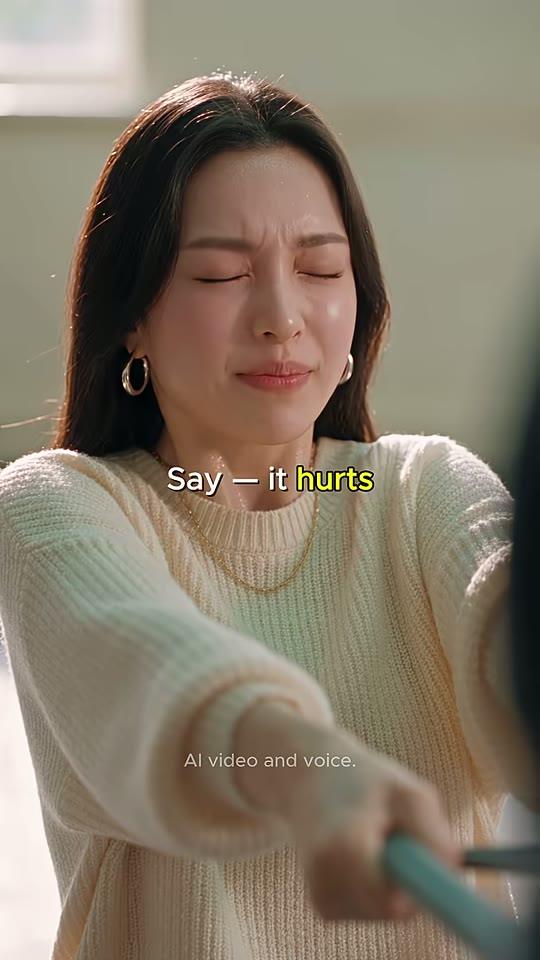
환자 얼굴
뻗은 팔
샷MCU앵글아이레벨 정면카메라고정구도S3/S6과 동일 셋업동작눈 감고 찡그림(VO 동안) → 눈 뜨고 더 크게 'It hurts!'대사트레이너(VO): "Say, 'It hurts.'" / 환자: "It hurts!"화면 자막11.875~13.083 'Say — it hurts'('hurts' 노랑) → 13.083~13.750 'It hurts!'('hurts!' 노랑)들어오는 전환하드컷 + 오디오 L컷효과음/음악BGM 유지역할복창 2회차 — 반복으로 정답 각인
1순위
seedance-2-5원본과 동일 모델, 눈 질끈·찡그림 같은 통증 미세표정 재현
2순위
minimax-h3짧은 대사 립싱크+오디오 한 번에
3순위
seedance-2-0클로즈업 감정 연기 대안
① 이미지 프롬프트 (원본 클론)Medium close-up, eye level, frontal. the Patient: a Korean woman in her mid-20s, long straight dark-brown hair with center part, gold hoop earrings, thin gold chain necklace, oversized cream chunky rib-knit sweater, charcoal leggings, barefoot, eyes squeezed shut, grimacing, arms stretched forward holding the band. background: out-of-focus plain cream-beige wall with soft window light, creamy bokeh Set: a bright physical-therapy / movement studio: cream-beige walls, white drop ceiling with long fluorescent tube lights giving a faint green cast, a large white-framed window on the left with soft overcast daylight, grey-green interlocking gym mats with stitched seams on the floor. photorealistic cinematic live-action film still, vertical 9:16 (608x1080), soft natural daylight (5000K) mixed with fluorescent top light, warm beige tones, gentle film grain, natural skin texture with slight sweat sheen, shallow depth of field on close-ups, AI-realism in the style of Seedance 2.5.
② 영상 프롬프트 (원본 클론)1.96 seconds. Over the trainer's off-screen voice ("Say— 'It hurts.'"), she grimaces, then opens her eyes and says louder and clearer: "It hurts!" Static camera.
③ 동물 버전 이미지 프롬프트Medium close-up, eye level, frontal. 햄누나 (Patient): a cream-and-white long-haired hamster girl, tiny gold hoop earrings and thin gold chain, oversized cream chunky rib-knit sweater, charcoal leggings, eyes squeezed shut, grimacing, paws forward on the band. photorealistic anthropomorphic animals with real fur detail and expressive animal faces, same live-action cinematic lighting as a Hollywood film, not cartoon. background: out-of-focus plain cream-beige wall with soft window light, creamy bokeh Set: a bright physical-therapy / movement studio: cream-beige walls, white drop ceiling with long fluorescent tube lights giving a faint green cast, a large white-framed window on the left with soft overcast daylight, grey-green interlocking gym mats with stitched seams on the floor. photorealistic cinematic live-action film still, vertical 9:16 (608x1080), soft natural daylight (5000K) mixed with fluorescent top light, warm beige tones, gentle film grain, natural skin texture with slight sweat sheen, shallow depth of field on close-ups, AI-realism in the style of Seedance 2.5.
④ 동물 버전 영상 프롬프트1.96 seconds. Over the cat's off-screen voice, 햄누나 grimaces then squeaks clearly: "It hurts!" Static camera.
네거티브cartoon, anime, 3D render look, plastic skin, waxy face, extra fingers, deformed hands, fused fingers, broken band, band passing through hands, warped face, subtitles, text other than the vkki logo, watermark, lowres, heavy motion blur on faces, flicker, frame jitter, horizontal 16:9 framing, letterbox, dark moody lighting, gym machines, mirrors || ANIMAL VERSION add: human faces on animals, human hands, humans, uncanny hybrid, stuffed toy look, chibi, big-head cartoon proportions
컷 9 · 보상 — '말을 제대로 하면 밴드가 놓아준다' 규칙 해소 + 거인 재등장으로 시각적 웃음
13.79s → 15.33s (1.54s)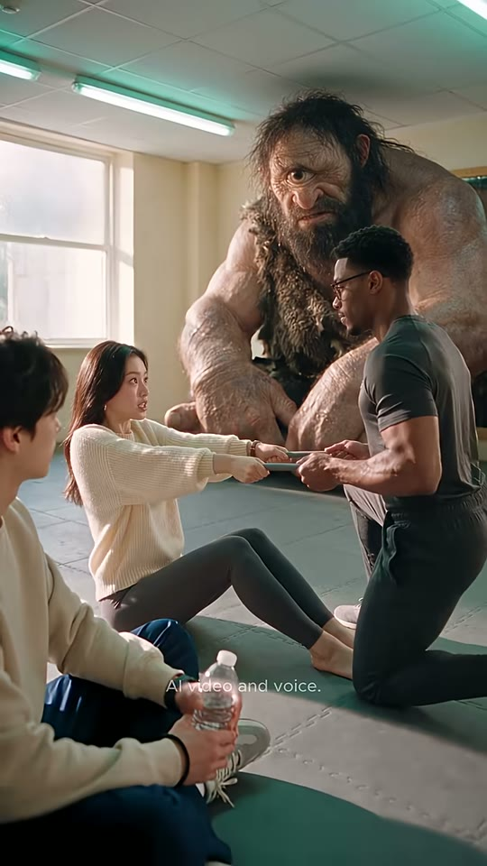
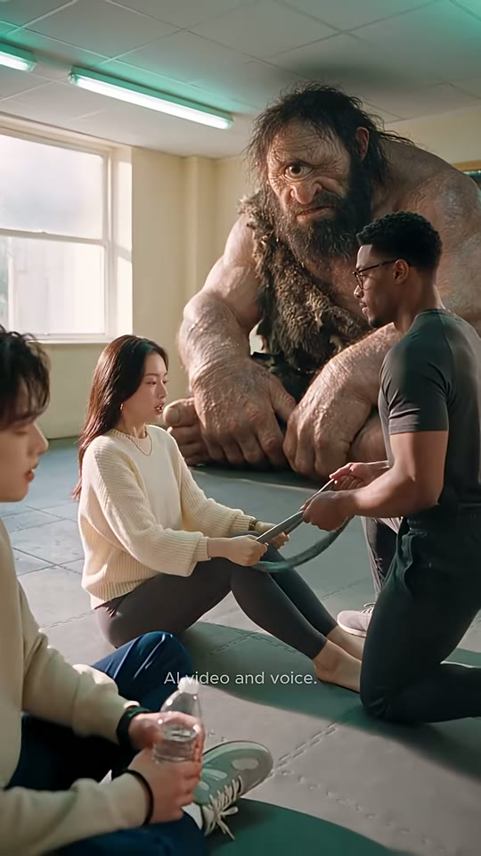

보키(거인)
트레이너
환자(여)
부키(전경)
밴드
샷WS앵글아이레벨(약간 하이)카메라고정구도S1과 동일 와이드 셋업(보키·트레이너·환자·전경 부키). 밴드가 느슨해져 환자 무릎 위로 내려옴동작정답을 말하자 트레이너가 밴드를 풀어주며 환자 쪽으로 몸을 기울임, 환자 팔 힘 빠짐, 보키는 외눈으로 내려다봄, 부키는 물병 들고 계속 구경.대사(대사 없음)화면 자막자막 없음들어오는 전환하드컷(CU 핑퐁 → 와이드로 호흡 전환)효과음/음악밴드 탁 풀리는 소리·안도의 숨(추정)역할보상 — '말을 제대로 하면 밴드가 놓아준다' 규칙 해소 + 거인 재등장으로 시각적 웃음
1순위
veo-3-1다인물+거인 스케일·공간감, 앰비언스 동시 생성
2순위
seedance-2-5원본 모델 — 동일 룩
3순위
kling-v3밴드 당기기 전신 물리 안정
① 이미지 프롬프트 (원본 클론)Wide shot, eye level slightly high, same framing as the opening. Foreground left: Buki: a Korean young man about 20 with messy dark-brown hair, cream crewneck sweatshirt, navy track pants with white stripe, black wristband, grey-green sneakers, sitting cross-legged holding a plastic water bottle. Center: the Patient: a Korean woman in her mid-20s, long straight dark-brown hair with center part, gold hoop earrings, thin gold chain necklace, oversized cream chunky rib-knit sweater, charcoal leggings, barefoot, arms relaxed, band slack on her lap. Right: the Trainer: an athletic Black man about 30, short curly black hair with a crisp fade, trimmed goatee, round tortoiseshell glasses, fitted charcoal-teal athletic T-shirt with a small lilac embroidered 'vkki' logo with a tiny flower star on the left chest, dark grey joggers, leaning in, letting go of the band. Behind: Voki: a gigantic one-eyed cyclops caveman about three times human height, crouching, weathered tan skin, long matted dark hair and bushy beard, single large central eye, shaggy brown fur pelt over one shoulder, huge knuckles resting on the mat, calm and curious, watching with his single eye. Set: a bright physical-therapy / movement studio: cream-beige walls, white drop ceiling with long fluorescent tube lights giving a faint green cast, a large white-framed window on the left with soft overcast daylight, grey-green interlocking gym mats with stitched seams on the floor. photorealistic cinematic live-action film still, vertical 9:16 (608x1080), soft natural daylight (5000K) mixed with fluorescent top light, warm beige tones, gentle film grain, natural skin texture with slight sweat sheen, shallow depth of field on close-ups, AI-realism in the style of Seedance 2.5.
② 영상 프롬프트 (원본 클론)1.5 seconds, no dialogue. The trainer releases tension on the band and leans toward the patient; her arms relax with a relieved exhale; the giant cyclops watches and blinks; Buki sips-ready with the water bottle. Static camera.
③ 동물 버전 이미지 프롬프트Wide shot, eye level slightly high, same framing as the opening. Foreground: 햄찌 (Buki): a small golden-orange Syrian hamster boy sitting cross-legged, cream crewneck sweatshirt, navy track pants, tiny grey-green sneakers, hugging a small water bottle. Center: 햄누나 (Patient): a cream-and-white long-haired hamster girl, tiny gold hoop earrings and thin gold chain, oversized cream chunky rib-knit sweater, charcoal leggings, paws relaxed, band slack. Right: 냥트레이너 (Trainer): a large black-and-white tuxedo cat standing/kneeling upright like a human, calm amber eyes behind round tortoiseshell glasses, long white whiskers, fitted charcoal-teal athletic T-shirt with a small lilac embroidered 'vkki' logo on the left chest, dark grey joggers, leaning in, letting go. Behind: 보키 (Voki): a gigantic shaggy brown Maine Coon cat about three times taller than everyone, crouching on the mat, one big round eye open in the center of its face (cyclops-like, the fur parted over it), primitive fur-pelt caveman tunic over one shoulder, huge fluffy paws resting on the mat, calm and curious. photorealistic anthropomorphic animals with real fur detail and expressive animal faces, same live-action cinematic lighting as a Hollywood film, not cartoon. Set: a bright physical-therapy / movement studio: cream-beige walls, white drop ceiling with long fluorescent tube lights giving a faint green cast, a large white-framed window on the left with soft overcast daylight, grey-green interlocking gym mats with stitched seams on the floor. photorealistic cinematic live-action film still, vertical 9:16 (608x1080), soft natural daylight (5000K) mixed with fluorescent top light, warm beige tones, gentle film grain, natural skin texture with slight sweat sheen, shallow depth of field on close-ups, AI-realism in the style of Seedance 2.5.
④ 동물 버전 영상 프롬프트1.5 seconds, no dialogue. The cat trainer lets the band go slack, 햄누나 sighs in relief, the giant one-eyed Maine Coon blinks slowly, 햄찌 watches. Static camera.
네거티브cartoon, anime, 3D render look, plastic skin, waxy face, extra fingers, deformed hands, fused fingers, broken band, band passing through hands, warped face, subtitles, text other than the vkki logo, watermark, lowres, heavy motion blur on faces, flicker, frame jitter, horizontal 16:9 framing, letterbox, dark moody lighting, gym machines, mirrors || ANIMAL VERSION add: human faces on animals, human hands, humans, uncanny hybrid, stuffed toy look, chibi, big-head cartoon proportions
컷 10 · 펀치라인+루프 — 정답 문장으로 해결('어디가 아픈지 이제 알겠다'), 대사 끝과 동시에
15.33s → 17.97s (2.64s)
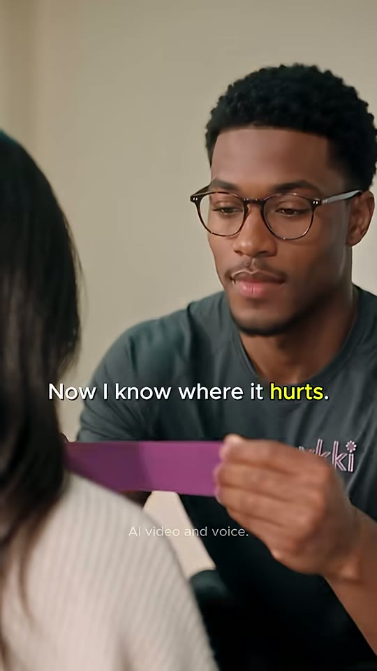
환자 뒷모습(전경 흐림)
테이프 쥔 손
트레이너 얼굴(후반)
샷CU→MCU앵글아이레벨, 환자 뒤 OTS카메라틸트업/붐업(손 → 얼굴, 추정) + 인물이 카메라 쪽으로 다가옴구도시작: 좌측 전경에 환자 뒷머리·크림 스웨터(흐림, 화면 좌 55%), 우측에 트레이너 몸통과 손 — 보라색 키네시오 테이프 조각을 손끝으로 뜯음(y≈60~70%). 16.0s 이후 트레이너 얼굴이 화면 우중앙(y≈15~50%)으로 올라오며 테이프를 환자 어깨에 붙이는 MCU. 자막은 가장 낮은 y≈58%동작트레이너가 보라색 키네시오 테이프를 꺼내 이면지를 뜯고(15.3~16.3s), 환자 어깨 쪽으로 몸을 숙여 테이프를 붙이며 미소 섞인 한마디 'Now I know where it hurts.'대사트레이너: "Now I know where it hurts."화면 자막15.333~16.375 자막 없음 → 16.375~17.972 'Now I know where it hurts.'('hurts.' 노랑, y≈58%)들어오는 전환하드컷효과음/음악테이프 찍 뜯는 소리(추정), BGM 마무리. 페이드 없이 하드 엔드역할펀치라인+루프 — 정답 문장으로 해결('어디가 아픈지 이제 알겠다'), 대사 끝과 동시에 종료 → 오프닝 와이드로 반복 재생 유도
1순위
kling-v3-omni테이프 떼는 손동작 + 마지막 대사 립싱크 동시
2순위
minimax-h3대사 립싱크 우선 시(무료)
3순위
seedance-2-5원본 모델 — 틸트업 카메라 무브 재현
① 이미지 프롬프트 (원본 클론)Close-up over the patient's back, eye level. the Trainer: an athletic Black man about 30, short curly black hair with a crisp fade, trimmed goatee, round tortoiseshell glasses, fitted charcoal-teal athletic T-shirt with a small lilac embroidered 'vkki' logo with a tiny flower star on the left chest, dark grey joggers, leaning in, peeling the backing off a strip of bright purple kinesiology tape with his fingertips. Left foreground: out-of-focus back of the patient's long dark hair and cream knit sweater. background: out-of-focus plain cream-beige wall with soft window light, creamy bokeh Set: a bright physical-therapy / movement studio: cream-beige walls, white drop ceiling with long fluorescent tube lights giving a faint green cast, a large white-framed window on the left with soft overcast daylight, grey-green interlocking gym mats with stitched seams on the floor. photorealistic cinematic live-action film still, vertical 9:16 (608x1080), soft natural daylight (5000K) mixed with fluorescent top light, warm beige tones, gentle film grain, natural skin texture with slight sweat sheen, shallow depth of field on close-ups, AI-realism in the style of Seedance 2.5.
② 영상 프롬프트 (원본 클론)2.6 seconds. The trainer peels a strip of purple kinesiology tape, the camera tilts up from his hands to his face as he leans in to apply the tape to her shoulder, then says with a warm half-smile. Lip-sync, warm baritone: "Now I know where it hurts." End abruptly right after the line, no fade.
③ 동물 버전 이미지 프롬프트Close-up over 햄누나's furry back, eye level. 냥트레이너 (Trainer): a large black-and-white tuxedo cat standing/kneeling upright like a human, calm amber eyes behind round tortoiseshell glasses, long white whiskers, fitted charcoal-teal athletic T-shirt with a small lilac embroidered 'vkki' logo on the left chest, dark grey joggers, leaning in, peeling a strip of bright purple kinesiology tape with its paws. photorealistic anthropomorphic animals with real fur detail and expressive animal faces, same live-action cinematic lighting as a Hollywood film, not cartoon. Left foreground: blurred cream-and-white fur and cream knit sweater. background: out-of-focus plain cream-beige wall with soft window light, creamy bokeh Set: a bright physical-therapy / movement studio: cream-beige walls, white drop ceiling with long fluorescent tube lights giving a faint green cast, a large white-framed window on the left with soft overcast daylight, grey-green interlocking gym mats with stitched seams on the floor. photorealistic cinematic live-action film still, vertical 9:16 (608x1080), soft natural daylight (5000K) mixed with fluorescent top light, warm beige tones, gentle film grain, natural skin texture with slight sweat sheen, shallow depth of field on close-ups, AI-realism in the style of Seedance 2.5.
④ 동물 버전 영상 프롬프트2.6 seconds. The tuxedo cat peels the purple tape (a little of it sticks to its paw fur — tiny comic beat), camera tilts up to its face as it applies the tape to 햄누나's shoulder: "Now I know where it hurts." Hard end, no fade.
네거티브cartoon, anime, 3D render look, plastic skin, waxy face, extra fingers, deformed hands, fused fingers, broken band, band passing through hands, warped face, subtitles, text other than the vkki logo, watermark, lowres, heavy motion blur on faces, flicker, frame jitter, horizontal 16:9 framing, letterbox, dark moody lighting, gym machines, mirrors || ANIMAL VERSION add: human faces on animals, human hands, humans, uncanny hybrid, stuffed toy look, chibi, big-head cartoon proportions
✂️ 편집 키트
타임라인0.000~2.000 와이드(거인·밴드, 무자막) → 2.000 트레이너 'Tell me when it hurts' → 3.917 환자 'Stop — I'm painful!' → 4.917 손 인서트(자막 이월) → 5.958 트레이너 'Painful? You're hurting me / The shoulder is painful' → 8.750 환자(VO 'Say — it hurts') 'It hurts!' → 10.875 트레이너 'The shoulder is painful' → 11.833 환자(VO) 'It hurts!' → 13.792 와이드 밴드 풀림 → 15.333 테이핑 'Now I know where it hurts.' → 17.972 하드 엔드
FFmpeg 명령# === SnbQGesuWvA 1:1 클론 편집 (Git Bash 기준, 창 안 띄움: ffmpeg는 현재 셸에서 직접 실행) ===
# 준비: clips/ 에 생성 클립(s01 s02 s03 s04 s05 s06 s07 s08 s09 s10).mp4, bgm.mp3, subs.ass(아래 ass_subtitle 그대로 저장), fonts/Montserrat-SemiBold.ttf + Montserrat-Regular.ttf
mkdir -p norm
# 1) 샷 규격화 + 실측 길이(초)로 정확히 트림 — 608x1080 / 24fps / 44.1kHz 스테레오, 짧으면 마지막 프레임 복제
for s in "s01 2.0" "s02 1.917" "s03 1.0" "s04 1.041" "s05 2.792" "s06 2.125" "s07 0.958" "s08 1.959" "s09 1.541" "s10 2.639"; do set -- $s; ffmpeg -y -nostdin -i "clips/$1.mp4" -t $2 -vf "scale=608:1080:force_original_aspect_ratio=increase,crop=608:1080,fps=24,setsar=1,tpad=stop_mode=clone:stop_duration=2,format=yuv420p" -af "aresample=44100,aformat=channel_layouts=stereo,apad" -c:v libx264 -crf 16 -preset medium -c:a aac -b:a 192k -ar 44100 "norm/$1.mp4"; done
# (오디오 없는 클립이면 위 줄 대신: ffmpeg -y -nostdin -i "clips/$1.mp4" -f lavfi -i anullsrc=r=44100:cl=stereo -t $2 -map 0:v -map 1:a -vf "...같은 vf..." -c:v libx264 -crf 16 -c:a aac -ar 44100 "norm/$1.mp4")
# 2) 하드컷 이어붙이기(원본은 전부 하드컷 — xfade 없음)
: > list.txt; for n in s01 s02 s03 s04 s05 s06 s07 s08 s09 s10; do echo "file 'norm/$n.mp4'" >> list.txt; done
ffmpeg -y -nostdin -f concat -safe 0 -i list.txt -c:v libx264 -crf 16 -preset medium -pix_fmt yuv420p -r 24 -c:a aac -b:a 192k -ar 44100 concat.mp4
# 3) 자막 burn-in(키워드 노랑 #FFFF40 + 워터마크 'AI video and voice.' 포함) + BGM 덕킹(대사 올 때 BGM 자동 감쇠) + 라우드니스
ffmpeg -y -nostdin -i concat.mp4 -stream_loop -1 -i bgm.mp3 -filter_complex "[0:v]subtitles=subs.ass:fontsdir=fonts[v];[0:a]asplit=2[vo][sc];[1:a]aresample=44100,aformat=channel_layouts=stereo,volume=0.22[bg];[bg][sc]sidechaincompress=threshold=0.02:ratio=8:attack=15:release=350[duck];[vo][duck]amix=inputs=2:duration=first:normalize=0,loudnorm=I=-14:TP=-1.5:LRA=11[a]" -map "[v]" -map "[a]" -t 17.972 -c:v libx264 -crf 17 -preset slow -pix_fmt yuv420p -r 24 -c:a aac -b:a 192k -ar 44100 -movflags +faststart final_vk_SnbQGesuWvA.mp4
# 4) 원본 음량 그대로 재현하려면 3)의 loudnorm을 I=-17:TP=-1.5:LRA=7 로 교체 (원본 측정 -16.9 LUFS, LRA 7.2)
# 5) 원본은 페이드아웃/페이드투블랙 없음 — 마지막 프레임에서 하드 엔드(루프 재생 유도). 넣고 싶으면 [0:v] 뒤에 fade=t=out:st=17.57:d=0.4 추가
# 6) 검증: ffprobe -v error -show_entries format=duration -of csv=p=0 final_vk_SnbQGesuWvA.mp4 → 17.972 근처 / ffmpeg -nostdin -i final_vk_SnbQGesuWvA.mp4 -af ebur128 -f null - 로 LUFS 확인
# L컷 팁: S6·S8의 트레이너 VO('Say — it hurts')를 별도 vo_say.wav로 만들었다면 3) 단계 전에 concat.mp4 오디오에 adelay로 얹기: ffmpeg -y -nostdin -i concat.mp4 -i vo_say.wav -filter_complex "[1:a]asplit=2[x][y];[x]adelay=8900|8900[x1];[y]adelay=11950|11950[y1];[0:a][x1][y1]amix=inputs=3:duration=first:normalize=0[a]" -map 0:v -map "[a]" -c:v copy -c:a aac -ar 44100 concat_vo.mp4 (이후 concat_vo.mp4를 3)의 입력으로)
ASS 자막 스타일[Script Info]
ScriptType: v4.00+
PlayResX: 608
PlayResY: 1080
WrapStyle: 2
ScaledBorderAndShadow: yes
YCbCr Matrix: TV.709
[V4+ Styles]
Format: Name, Fontname, Fontsize, PrimaryColour, SecondaryColour, OutlineColour, BackColour, Bold, Italic, Underline, StrikeOut, ScaleX, ScaleY, Spacing, Angle, BorderStyle, Outline, Shadow, Alignment, MarginL, MarginR, MarginV, Encoding
Style: Cap,Montserrat SemiBold,34,&H00FFFFFF,&H000000FF,&H8C000000,&H96000000,0,0,0,0,90,100,0,0,1,0.8,1.6,5,20,20,0,1
Style: WM,Montserrat,17,&H4AD1CFC8,&H000000FF,&HFF000000,&HFF000000,0,0,0,0,92,100,0,0,1,0,0,5,20,20,0,1
[Events]
Format: Layer, Start, End, Style, Name, MarginL, MarginR, MarginV, Effect, Text
Dialogue: 0,0:00:00.00,0:00:17.97,WM,,0,0,0,,{\pos(304,855)}AI video and voice.
Dialogue: 1,0:00:02.92,0:00:03.88,Cap,,0,0,0,,{\pos(349,538)}Tell me when it hurts
Dialogue: 1,0:00:04.00,0:00:05.96,Cap,,0,0,0,,{\pos(304,539)}Stop — I'm {\c&H40FFFF&}painful{\c&HFFFFFF&}!
Dialogue: 1,0:00:05.96,0:00:07.50,Cap,,0,0,0,,{\pos(304,543)}{\c&H40FFFF&}Painful{\c&HFFFFFF&}? You're hurting me
Dialogue: 1,0:00:07.79,0:00:08.75,Cap,,0,0,0,,{\pos(337,530)}The shoulder is {\c&H40FFFF&}painful{\c&HFFFFFF&}
Dialogue: 1,0:00:08.75,0:00:10.29,Cap,,0,0,0,,{\pos(305,535)}Say — it {\c&H40FFFF&}hurts{\c&HFFFFFF&}
Dialogue: 1,0:00:10.33,0:00:10.88,Cap,,0,0,0,,{\pos(324,533)}It {\c&H40FFFF&}hurts!{\c&HFFFFFF&}
Dialogue: 1,0:00:10.88,0:00:11.83,Cap,,0,0,0,,{\pos(337,530)}The shoulder is {\c&H40FFFF&}painful{\c&HFFFFFF&}
Dialogue: 1,0:00:11.88,0:00:13.08,Cap,,0,0,0,,{\pos(305,535)}Say — it {\c&H40FFFF&}hurts{\c&HFFFFFF&}
Dialogue: 1,0:00:13.08,0:00:13.75,Cap,,0,0,0,,{\pos(324,533)}It {\c&H40FFFF&}hurts!{\c&HFFFFFF&}
Dialogue: 1,0:00:16.38,0:00:17.97,Cap,,0,0,0,,{\pos(304,631)}Now I know where it {\c&H40FFFF&}hurts.{\c&HFFFFFF&}
HyperFrames 편집 프롬프트 (Claude에 그대로 붙여넣기)HyperFrames로 'Buki & Voki: OFF CAMERA — EP.6 : It Hurts!' 9:16 세로 쇼츠를 608x1080, 24fps, 총 17972ms 길이로 1:1 재현 편집해줘. 모든 전환은 하드컷(디졸브·xfade 금지), 줌/흔들림 효과 추가 금지(카메라 무브는 생성 클립 자체에 있음).
[컷 타임라인]
- S1 와이드(거인·밴드): 0ms~2000ms (2000ms) — clips/s01.mp4
- S2 트레이너 OTS MCU: 2000ms~3917ms (1917ms) — clips/s02.mp4
- S3 환자 MCU 외침: 3917ms~4917ms (1000ms) — clips/s03.mp4
- S4 손 인서트: 4917ms~5958ms (1041ms) — clips/s04.mp4
- S5 트레이너 가슴 손: 5958ms~8750ms (2792ms) — clips/s05.mp4
- S6 환자 It hurts 1: 8750ms~10875ms (2125ms) — clips/s06.mp4
- S7 트레이너 반복: 10875ms~11833ms (958ms) — clips/s07.mp4
- S8 환자 It hurts 2: 11833ms~13792ms (1959ms) — clips/s08.mp4
- S9 와이드 밴드 풀림: 13792ms~15333ms (1541ms) — clips/s09.mp4
- S10 테이핑 펀치라인: 15333ms~17972ms (2639ms) — clips/s10.mp4
[자막 레이어] 폰트 Montserrat SemiBold(원본은 Proxima Nova/Gilroy 계열 추정, 가로폭 90%), 34px(1080 기준), 흰색 #FFFFFF, 강조 단어만 노랑 #FFFF40, 외곽선 0.8px 반투명 검정 + 드롭섀도 1.6px(검정 40%), 가운데 정렬. 등장/퇴장 애니메이션 없음(0ms 팝 온/오프). 위치는 고정 하단이 아니라 '말하는 인물의 턱~목 높이'로 컷마다 달라짐(아래 y값 준수).
- 2917ms~3875ms: "Tell me when it hurts" (강조: 없음) 위치 x=349px, y=538px
- 4000ms~5958ms: "Stop — I'm painful!" (강조: painful) 위치 x=304px, y=539px
- 5958ms~7500ms: "Painful? You're hurting me" (강조: Painful) 위치 x=304px, y=543px
- 7792ms~8750ms: "The shoulder is painful" (강조: painful) 위치 x=337px, y=530px
- 8750ms~10292ms: "Say — it hurts" (강조: hurts) 위치 x=305px, y=535px
- 10333ms~10875ms: "It hurts!" (강조: hurts!) 위치 x=324px, y=533px
- 10875ms~11833ms: "The shoulder is painful" (강조: painful) 위치 x=337px, y=530px
- 11875ms~13083ms: "Say — it hurts" (강조: hurts) 위치 x=305px, y=535px
- 13083ms~13750ms: "It hurts!" (강조: hurts!) 위치 x=324px, y=533px
- 16375ms~17972ms: "Now I know where it hurts." (강조: hurts.) 위치 x=304px, y=631px
[워터마크] 'AI video and voice.' Montserrat Regular 17px, #C8CFD1 불투명도 70%, x=304 y=855(가운데, 세로 79%), 0ms~끝까지 고정.
[오디오] 각 클립 대사 오디오 사용 + S6(8900ms)·S8(11950ms)에 트레이너 VO 'Say — it hurts'를 L컷으로 얹기. bgm.mp3 볼륨 22%, 대사 구간 -8dB 덕킹(attack 15ms, release 350ms), 최종 -14 LUFS(원본 재현이면 -17 LUFS).
[엔딩] 17972ms에서 페이드 없이 하드 엔드(루프).
[검수] 3200ms, 4500ms, 6800ms, 10600ms, 12200ms, 17500ms 프레임 캡처 → 자막 y위치(약 50%, 마지막 58%)와 노랑 단어(painful/hurts) 원본 대조.
✅ 똑같이 만들기 체크리스트
- 첫 2.0초는 자막·대사 없는 와이드 — 거인 보키가 반드시 배경 상단을 크게 차지할 것(훅의 핵심)
- 트레이너 첫 대사 'Tell me when it hurts'(복선)와 마지막 'Now I know where it hurts'(회수) 수미상관 유지
- 오답 'painful'과 정답 'hurts'만 노랑 #FFFF40, 나머지 흰색. 자막 y≈50% 고정, 마지막만 58%
- S4 손 인서트에서 'Stop — I'm painful!' 자막을 그대로 유지(자막 L컷)
- S6·S8 환자 클로즈업에는 트레이너 목소리 'Say — it hurts'를 오프스크린 L컷으로 깔 것
- A-B 핑퐁을 2사이클(8.75~13.79s)로 반복, 두 번째 사이클은 더 짧게
- 트레이너 티셔츠 왼가슴 라일락 'vkki' 로고, 둥근 대모테 안경, 환자 크림 니트+금 후프 고정
- 밝은 창문 데이라이트 하이키 룩(EP.1의 어두운 촛불 룩과 반대) — 형광등 약한 녹색 기운
- 'AI video and voice.' 워터마크 하단 중앙 y≈79% 전 구간
- 엔딩 페이드 없음 — 대사 끝에서 하드 엔드
🐹 동물 버전 기획동물 캐스트(EP.1과 동일 유니버스 유지): 트레이너→냥트레이너(턱시도 고양이, 둥근 안경+vkki 티셔츠), 환자→햄누나(크림·화이트 장모 햄스터, 크림 니트), 전경 구경꾼 부키→햄찌(골든 햄스터, 물병 안고 구경), 거대 외눈 원시인 보키→보키(사람 3배 크기 외눈 메인쿤 고양이, 털가죽 튜닉). 그대로 둘 것: 10컷 타이밍·구도·OTS 전경 흐림·손 인서트·와이드 샌드위치 구조·자막(위치/노랑 키워드)·워터마크·하드 엔드·밝은 데이라이트 스튜디오. 바꿀 것: 캐릭터 외형만. 개그 보강 포인트: S5 '가슴에 손'은 고양이가 앞발로 가슴을 누르며 귀를 뒤로 젖히는 상처받은 척, S4 인서트는 고양이 발톱이 살짝 나와 밴드를 움켜쥠, S10 테이프가 고양이 발 털에 달라붙는 1초 개그(대사 타이밍은 유지). 스케일: 햄스터 환자와 고양이 트레이너가 밴드로 연결되도록 밴드 길이를 줄인 미니 밴드 소품 사용. 제작 순서: animal_swap 캐릭터 시트 4장 → 컷별 animal_image_prompt(레퍼런스 image2image) → minimax-h3/seedance-2-5 립싱크 → 트레이너 VO L컷 합성 → 같은 ffmpeg/ASS.
전체 프레임 시트 보기 (타임코드 포함)
전체 흐름
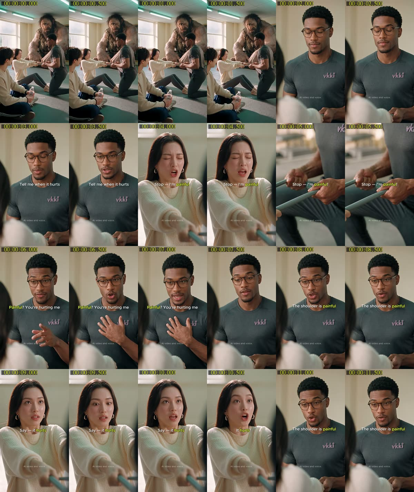
전체 흐름